| 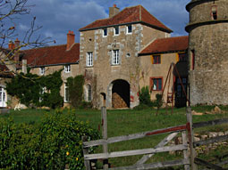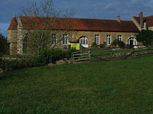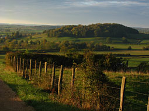 |
 |
| Conception and the philosophie of monthelon look at: [ before the source.pdf ] |
| Monthelon is a place for developing, preparing and realizing artistic ideas and of various ambitions as well genre-overlapping constallations. |
| 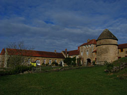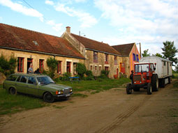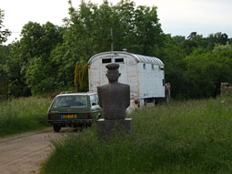 |
| Also seminars, conferences or "Think-Tanks" containing political, social or philosophical issues may take place as well as mediations of conflict-handling. |
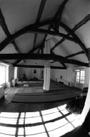 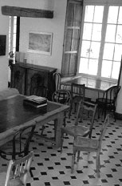 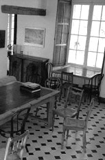 |
| Upon a hill, secluded and uninfluenced by urban distractions, lie a number of buildings and facilties providing suitable conditions for collective and individual "work in residence". |
|
|
| |
| Infrastructure |
| Monthelon disposes of an infrastructure enabling fine arts, theatre-, dance-, music-, performance-or circus companies to work on their projects. |
|
|
Groups of a about 20 persons can accommodated.
Supplementary ten persons can find place for realization of their individual projects. |
| 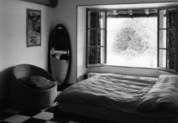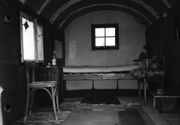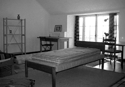 |
| The infrastructure covers: individually equipped accommodations |
| 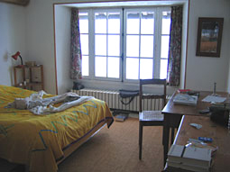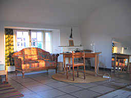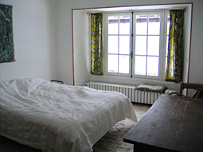 |
- community - bedrooms, single-, double - bedrooms,
perhaps caravans |
| - sanitary installations
(10 toilets, 6 showers, 2 bathtups)
|
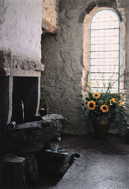 |
| - professional kitchen-equipment |
| 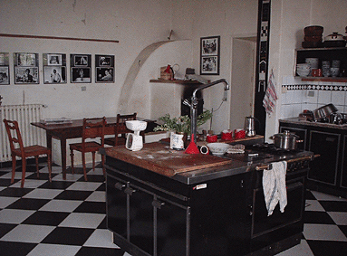
| 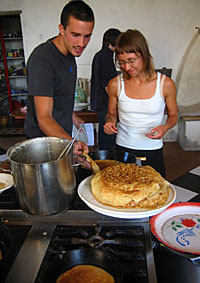 |
- dining room
- day-rooms
- library and videotape-library |
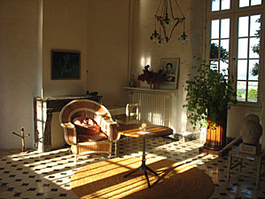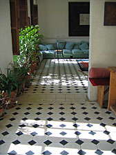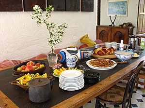 |
- tailor's workshop,
- metal - workshop
- joinery
- stonemason's workshop
- electronic studio including fragmentary soundstudion-equipment
- varios studios |
| 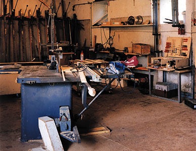
| 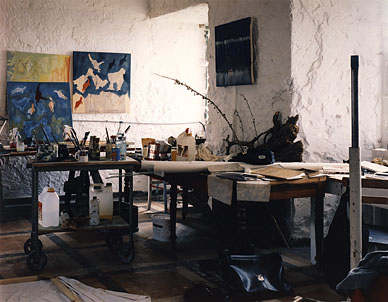 |
| |
| - large room for body-work / meditation |
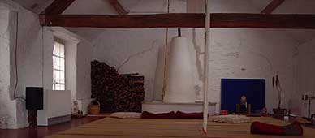 |
- Theater / Rehearsal room including basic technical equipment |
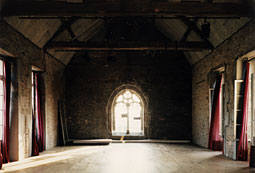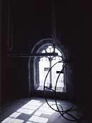 |
- office facilities with internet acces
- costume deposit
- grand piano
- circus tent including devices and equipment
- swimming pool |
| 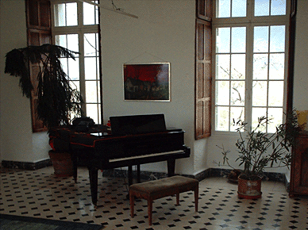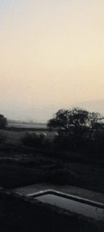
|
| - 2 kqm squared area |
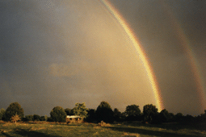 |
| - a circus tent |
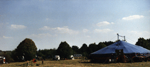 |
|
| |
| geographic location |
| - picturesquely situated on a gentle range in one of the least populated regions of France, in Burgundy, Department Yonne, part of the Montréal community |
| 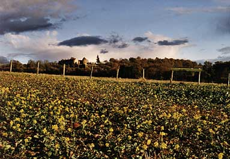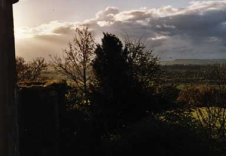 |
- excellent international train-connections,
- TGV direction Paris - Dijon, station Montbard,
- direct connection to airport Charles de Gaulle, Dijon and Lille (with connections to London, Bruxelles, Berlin a.o.)
- A 6, highway - exit Avallon, route Paris - Lyon |
| 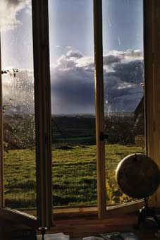 |
| |
| working and living |
The stay at Monthelon and it's duration are bound to the project.
Artists and cultural creatives of various nationalities live here in an atmospere of mutual relations, tolrerance an openness.
A central point of residential life at monthelon is joining a get-together for the evening meal.
The conditions for the stay at Monthelon will be set on account of record provided by the applicant and in conversation with the managers. |
| 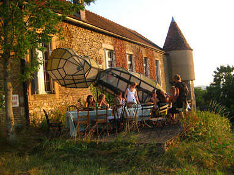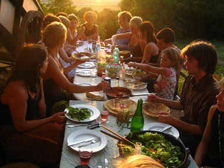 |
| |
| geschichte |
| Château de Monthelon was first mentioned in the records during the eighth century.
Marauding knights of the cross devastated the castle during the 13th century.
It's reconstruction and consolidation as a county took place as the duchy of burgundy gained strength.
During the french revolution in 1789-95 rebelling peasants destroyed the estate which was again reconstructed only after world war two. |
| 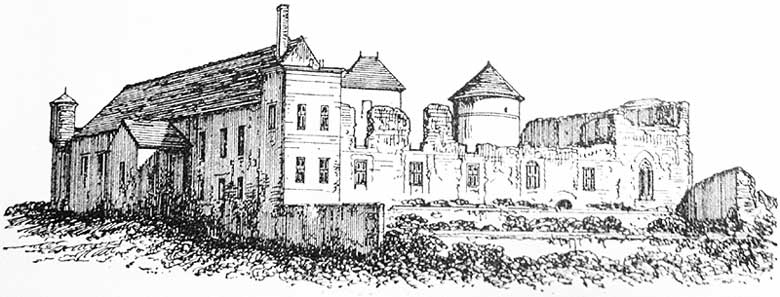 |
| Subsequently it was used as a nursery, later as children's holiday-home run by a worker's union.
The transformation of the buildings into a production - space for artists projects began in 1989 after the estate was aquisited by Eva Bruderer and Ueli Hirzel. |
| |
|
| |
| bilan |
 |
During the twenty years of Monthelon's existance about 1500 artists from 22 different countries have been working at Monthelon on 500 projects.
Monthelon has been inhabited by an average of 12 persons per stay working on projects plus the managers and their guests which are not registered in this account.
The duration of residence per person averaged one months.
: : projects_ 2000 - 2010 : :
: : residents homepages (selection) : : |
| |
| effects on the region |
| In direct consequences of projects that were realized at monthelon since 1990 there have been eleven families totaling 52 persons including 22 children which were born during this period that have settled in the nearer surroundings.
Fifteen buildings, resp. estates were aquisited, reconstructed and redecorated.
In close cooperation with local craftsmen scenes were built, caravans were restored as well as stage equipment and accessories were developed - having considerable effect on cultural and economical development in the region. |
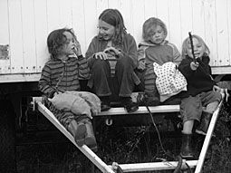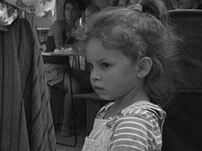 |
| |
| grundriss |
| 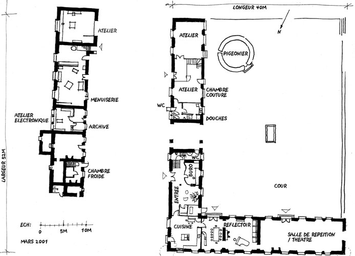 |
first and second floor |
| 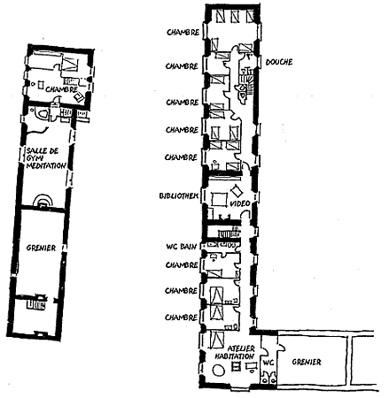 |
| |
au debut de page
Layout © Su Tiqqun |